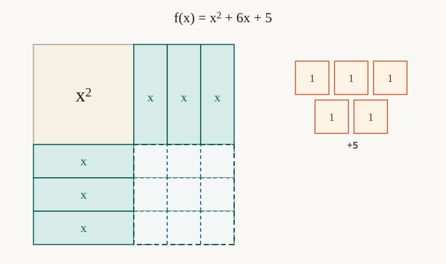

Completing the square — visual fixture
Hook demo for lesson-engineer. Not compiled student HTML. Copy stays in student-content.json.
- Same curve
- See the square
- Match the algebra
Name the side of the completed square and the leftover. Then check.

Compare the side you entered with the three x-rectangles on one side of the square.
After a pass — Advance is the primary
Side and leftover match this picture.
Named states (one line each)